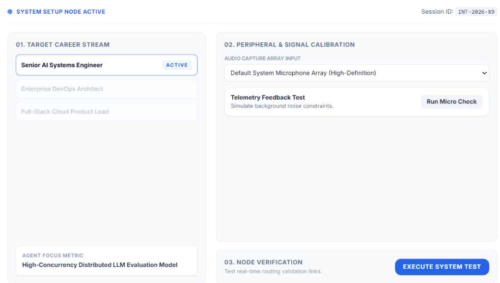
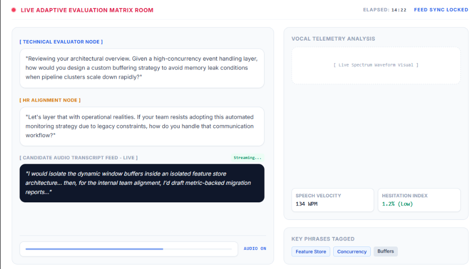
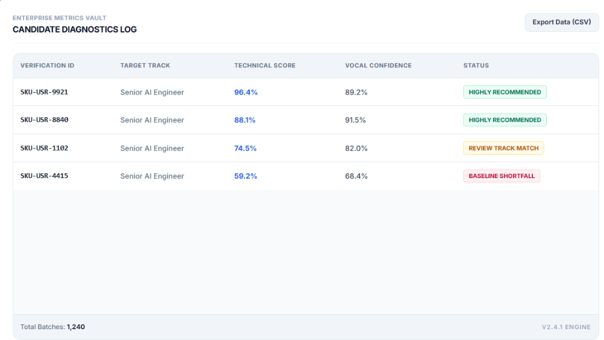

Requirement Gathering & Discovery
Researching the limitations of traditional resume screening and multiple-choice testing to establish an adaptive conversational architecture capable of tracking real-time voice and text answers.
The initial inspiration behind this project stems directly from the deep-seated limitations found in traditional interview methodologies, which frequently suffer from structural inconsistency, human cognitive bias, and extreme scaling bottlenecks when applied across massive modern enterprise applicant pools. This high-performance platform bridges the critical operational gap by orchestrating a highly coordinated, multi-agent AI system. It successfully simulates an intelligent, structured, and entirely objective conversation, allowing companies to evaluate a candidate's practical capabilities far beyond the static confines of standard paper resumes.

The central interactive engine powering the live web interface. Rather than running a static script of pre-recorded questions, the application functions through a fully synchronized multi-agent environment where specialized AI agents manage distinct parameters of the dialogue. A technical evaluator agent continuously introduces domain-specific problem statements, while an HR agent dynamically tests for behavioral consistency, critical situational judgment, and workplace culture alignment. As the user responds verbally to the screen prompts, the system evaluates the transcript in real time, intelligently adjusting subsequent question pathways and difficulty tiers based on instant performance markers.

Transforming enterprise recruitment from an intuitive guessing game into a structured, entirely data-driven operations lifecycle. The moment a candidate concludes their verbal adaptive session, the platform aggregates all background telemetry to compile a granular analytical report. The user interface compiles multi-agent behavioral ratings, natural language comprehension indexes, vocal confidence tiers, and technical validation score sheets into an elegantly organized grid layout. This presents hiring managers with an instant, auditable path toward making confident, metric-backed selection decisions without scanning manual notes.

Researching the limitations of traditional resume screening and multiple-choice testing to establish an adaptive conversational architecture capable of tracking real-time voice and text answers.
Structuring a clean, stress-free user environment for the applicant that minimizes distractions during speaking, coupled with a dense, highly professional visualization matrix built specifically for recruitment teams.
Building sharp data labels, responsive monitoring cards, and organized tabular modules that allow recruiters to cross-examine complex natural language processing outputs quickly.